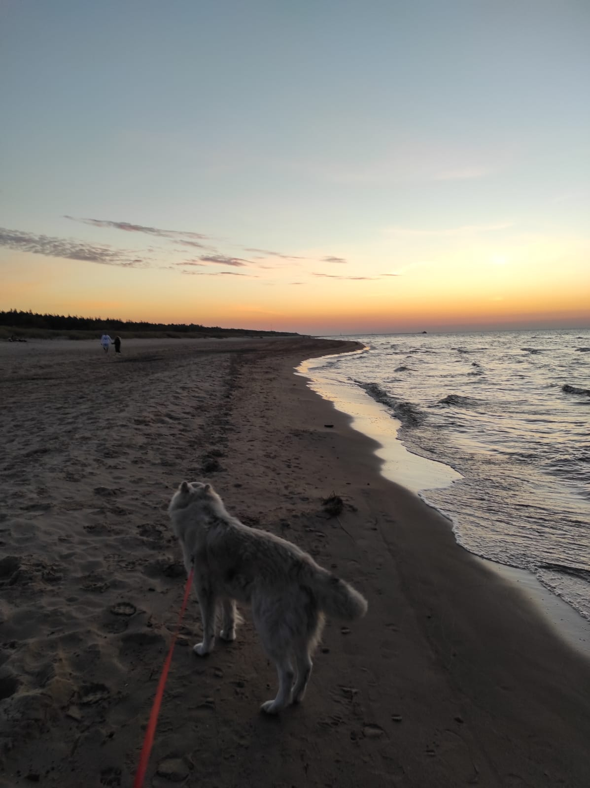
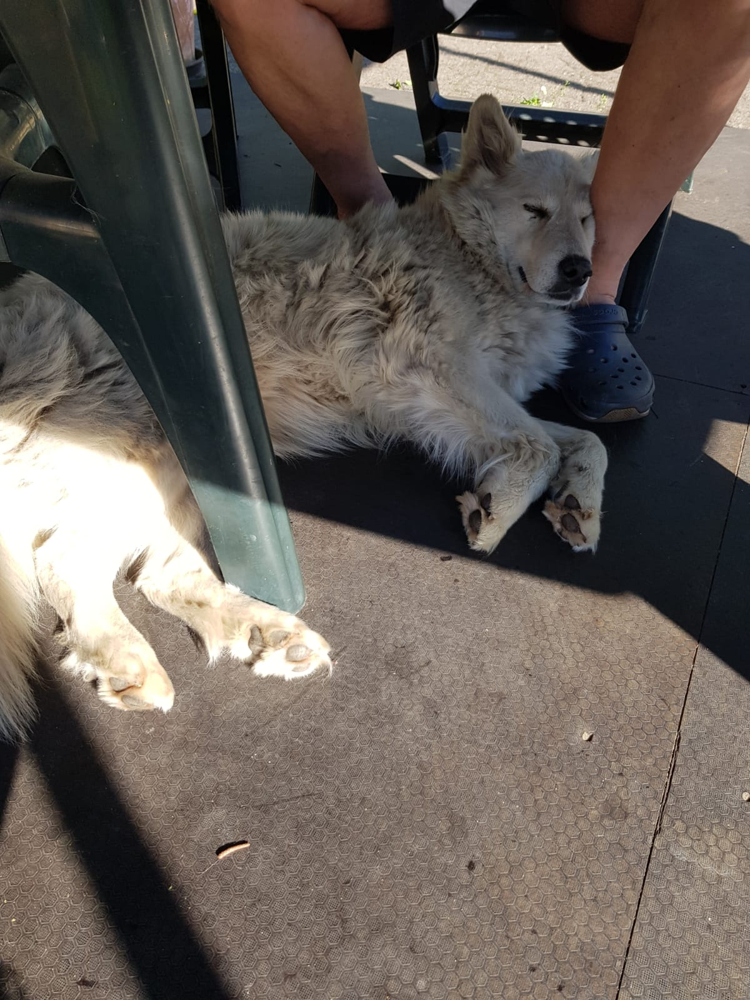

Stāsts par Lāru
Šis būs stāsts par manu sunīti, vārdā Lāra. Lāra mūsu ģimenē jau ir vairākus gadus.
Tikām pie Lāras, kad viņa vēl bija tikai kucēns un tikai 2 mēnešus veca. Nu jau viņa ir daļa no ģimenes. Neesmu saticis vēl dzīvespriecīgāku sunīti. Katru reizi kā izeju pagalmā, tā viņa vien vēlās, lai ar viņu paspēlējās, aizmet bumbu vai arī, lai vienkārši pakasa.
Cenšamies bieži doties izbraucienos ar viņu un pastaigāties, lai viņa var kārtīgi izskieties. Viņai ļoti patīk skriet pa ūdeni, it īpaši, ja iemet bumbu ūdenī. Neskatoties uz to, ka viņa ir tik ļoti rotaļīga, viņa nedosies rokās svešam cilvēkam, kas padara viņu par kārtīgu sargu.
Lāras īpašības
- Skaista
- Gudra
- Paklausīga
- Kārtīgs sargs
- Rotaļīga
Vietas, kur Lārai visvairāk patīk doties:
- pastaigā pie jūras
- pastaigā pa mežu
- pastaigā pa rajonu